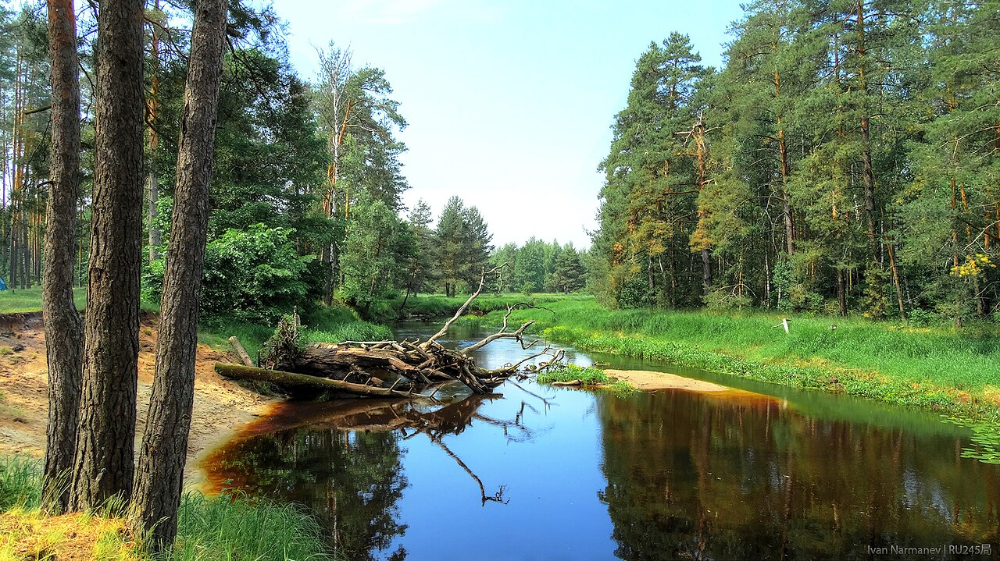
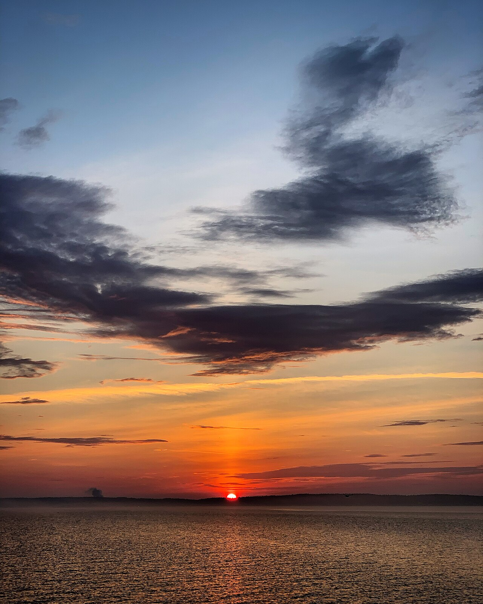

Озёра и сосны
Петрозаводск, набережная Онежского озера и прогулка по лесу. Ночевать удобно в городе, дорога занимает около четырёх часов на поезде.
Три проверенных варианта: от однодневной прогулки до поездки на два дня.
Петрозаводск, набережная Онежского озера и прогулка по лесу. Ночевать удобно в городе, дорога занимает около четырёх часов на поезде.

Лёгкий маршрут на 12 километров вдоль воды: песчаные берега, сосновый лес и места для пикника. Подходит для первого похода.

Вечерняя прогулка по набережной, лодочная станция и рыбный ужин. Маршрут без длинных переходов, подходит для спокойных выходных.